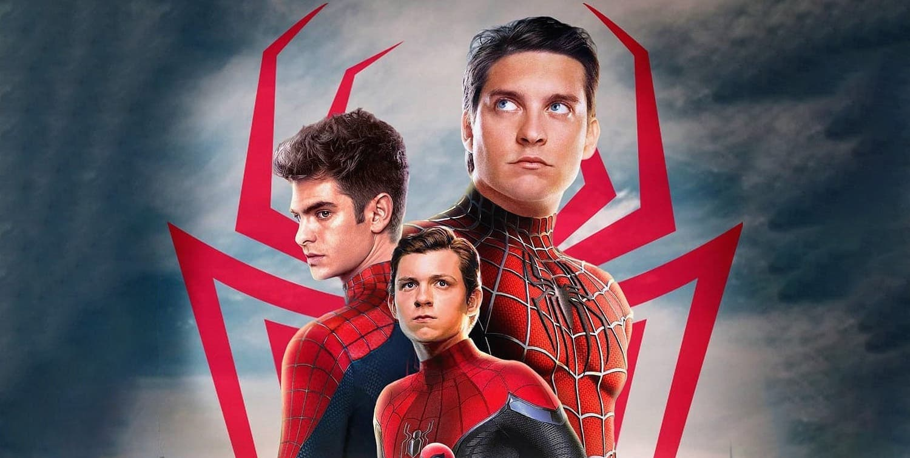

New Spider-man Movie?

It seems that 'SpiderMan 3' will feature Tobey Maguire and Andrew Garfield, very exciting news for fans of the saga. Both will join Tom Holland's universe and there are many
speculations about the plot of the Multiverse that the ancient Spider-Men bring. Know all the details in the news.